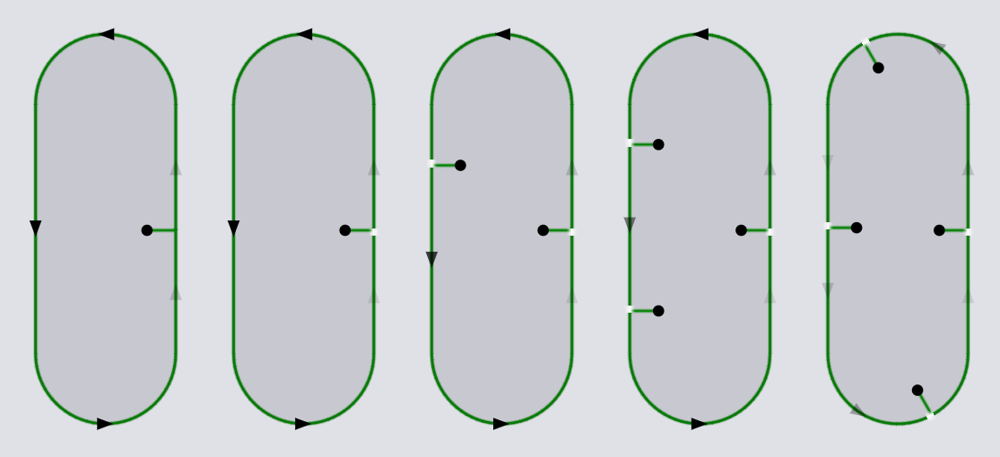
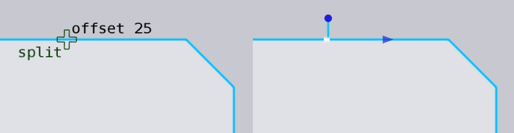

Kontur
Panelet Contour bruges til arbejdsgange på alle laserskæringer på en bestemt kontur. For eksempel kan der tilføjes microjoints for at opdele en laserskæring i to, eller joints kan fjernes for at kombinere to på hinanden følgende laserskæringer på den samme kontur til én.
For at få adgang til denne panel, klik på en laserskæring for at få vist panelet Laser Cut, og klik derefter på navigationsknappen Contour nær bunden for at åbne konturpanelet.
-
Delete: Slet alle laserskæringer på denne kontur.
-
Copy Tooling: Kopierer laserskæringerne på denne kontur til andre lignende konturer.
-
Microjoint: Indstillingerne i dette afsnit bruges for at tilføje eller fjerne microjoints på konturen.
-
Add: Klik her for at tilføje flere microjoints på konturen. Hver gang der tilføjes en microjoint, flyttes de eksisterende joints for at gøre alle laserskæringer omtrent lige lange. Billedet nedenfor viser resultaterne efter gentagne klik på knappen Add. (Bemærk, at mellem første og anden option er antallet af laserskæringer ikke øget, men der er tilføjet en microjoint i slutningen af skæringen).
 -
Reduce: Reducér antallet af microjoints ved at kombinere to laserskæringer sammen.
-
Remove All: Fjerner alle microjoints på denne kontur (hvilket resulterer i en enkelt laserskæring, der skærer hele konturen).
-
Scrap: Dette afsnit vises, hvis et hul inspiceres (indvendig kontur), og bruges til at tilføje Skrotskæringer for at skære stanseklumpen skabt af hullet, eller for at fjerne skrotskæringer, hvis de er blevet tilføjet tidligere.
-
Split Tooling
Ved klik på Split Tooling skifter dette panel til en specialtilstand, hvor laserskæringer kan opdeles eller to på hinanden følgende laserskæringer kan flettes sammen interaktivt.
-
Corner offset: Indtast en værdi her for at oprette en opdeling i en præcis afstand fra et hjørne. Ved bevægelse mod dette punkt, fremkommer der en snapindikator for at hjælpe med at placere opdelingen.
 -
Microjoint: Hvis denne er aktiveret, oprettes der en microjoint ved opdelingspunktet hver gang der laves en ny laserskæring. Her er et eksempel på en microjoint, der tilføjes (da vi er ved et hjørne, vises der en corner joint snapindikator).

Musen kan flyttes over en microjoint mellem to skæringer, og snapindikatoren skifter til merge. Klik vil nu fjerne denne joint og flette to tilstødende laserskæringer sammen til en enkelt.